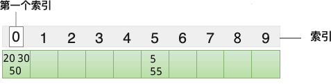
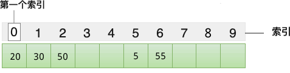

哈希查找算法
哈希查找算法又称散列查找算法，是一种借助哈希表（散列表）查找目标元素的方法，查找效率最高时对应的时间复杂度为 O(1)。
哈希查找算法适用于大多数场景，既支持在有序序列中查找目标元素，也支持在无序序列中查找目标元素。讲解哈希查找算法之前，我们首先要搞清楚什么是哈希表。
和其它存储结构（线性表、树等）相比，哈希表查找目标元素的效率非常高。每个存储到哈希表中的元素，都配有一个唯一的标识（又称“索引”或者“键”），用户想查找哪个元素，凭借该元素对应的标识就可以直接找到它，无需遍历整个哈希表。
多数场景中，哈希表是在数组的基础上构建的，下图给大家展示了一个普通的数组：

图 1 数组
使用数组构建哈希表，最大的好处在于：可以直接将数组下标当作已存储元素的索引，不再需要为每个元素手动配置索引，极大得简化了构建哈希表的难度。
我们知道，在数组中查找一个元素，除非提前知晓它存储位置处的下标，否则只能遍历整个数组。哈希表的解决方案是：各个元素并不从数组的起始位置依次存储，它们的存储位置由专门设计的函数计算得出，我们通常将这样的函数称为哈希函数。
哈希函数类似于数学中的一次函数，我们给它传递一个元素，它反馈给我们一个结果值，这个值就是该元素对应的索引，也就是存储到哈希表中的位置。
举个例子，将 {20, 30, 50, 70, 80} 存储到哈希表中，我们设计的哈希函数为 y=x/10，最终各个元素的存储位置如下图所示：

图 2 哈希表存储结构
在图 2 的基础上，假设我们想查找元素 50，只需将它带入 y=x/10 这个哈希函数中，计算出它对应的索引值为 5，直接可以在数组中找到它。借助哈希函数，我们提高了数组中数据的查找效率，这就是哈希表存储结构。
构建哈希表时，哈希函数的设计至关重要。假设将 {5, 20, 30, 50, 55} 存储到哈希表中，哈希函数是 y=x%10，各个元素在数组中的存储位置如下图所示：
可以看到，5 和 55 以及 20、30 和 50 对应的索引值是相同的，它们的存储位置发生了冲突，我们习惯称为哈希冲突或者哈希碰撞。设计一个好的哈希函数，可以降低哈希冲突的出现次数。哈希表提供了很多解决哈希冲突的方案，比如线性探测法、再哈希法、链地址法等。
本节我们使用线性探测法解决哈希冲突，解决方法是：当元素的索引值（存储位置）发生冲突时，从当前位置向后查找，直至找到一个空闲位置，作为冲突元素的存储位置。仍以图 3 中的哈希表为例，使用线性探测法解决哈希冲突的过程是：
借助线性探测法，最终 {5, 20, 30, 50, 55} 存储到哈希表中的状态为：
假设我们从图 4 所示的哈希表中查找元素 50，查找过程需要经过以下几步：
对于发生哈希冲突的哈希表，尽管查找效率会下降，但仍比一些普通存储结构（比如数组）的查找效率高。
例如，哈希查找算法查找 {5, 20, 30, 50, 55} 序列中是否有 50 这个元素，实现的伪代码如下：
结合伪代码，如下是使用哈希查找算法在 {5, 20, 30, 50, 55} 序列中查找 50 的 C 语言程序：
如下是使用哈希查找算法在 {5, 20, 30, 50, 55} 序列中查找 50 的 Java 程序：
如下是使用哈希查找算法在 {5, 20, 30, 50, 55} 序列中查找 50 的 Python 程序：
以上程序的输出结果均为：
哈希查找算法适用于大多数场景，既支持在有序序列中查找目标元素，也支持在无序序列中查找目标元素。讲解哈希查找算法之前，我们首先要搞清楚什么是哈希表。
哈希表是什么
哈希表（Hash table）又称散列表，是一种存储结构，通常用来存储多个元素。和其它存储结构（线性表、树等）相比，哈希表查找目标元素的效率非常高。每个存储到哈希表中的元素，都配有一个唯一的标识（又称“索引”或者“键”），用户想查找哪个元素，凭借该元素对应的标识就可以直接找到它，无需遍历整个哈希表。
多数场景中，哈希表是在数组的基础上构建的，下图给大家展示了一个普通的数组：
图 1 数组
使用数组构建哈希表，最大的好处在于：可以直接将数组下标当作已存储元素的索引，不再需要为每个元素手动配置索引，极大得简化了构建哈希表的难度。
我们知道，在数组中查找一个元素，除非提前知晓它存储位置处的下标，否则只能遍历整个数组。哈希表的解决方案是：各个元素并不从数组的起始位置依次存储，它们的存储位置由专门设计的函数计算得出，我们通常将这样的函数称为哈希函数。
哈希函数类似于数学中的一次函数，我们给它传递一个元素，它反馈给我们一个结果值，这个值就是该元素对应的索引，也就是存储到哈希表中的位置。
举个例子，将 {20, 30, 50, 70, 80} 存储到哈希表中，我们设计的哈希函数为 y=x/10，最终各个元素的存储位置如下图所示：
图 2 哈希表存储结构
在图 2 的基础上，假设我们想查找元素 50，只需将它带入 y=x/10 这个哈希函数中，计算出它对应的索引值为 5，直接可以在数组中找到它。借助哈希函数，我们提高了数组中数据的查找效率，这就是哈希表存储结构。
构建哈希表时，哈希函数的设计至关重要。假设将 {5, 20, 30, 50, 55} 存储到哈希表中，哈希函数是 y=x%10，各个元素在数组中的存储位置如下图所示：

图 3 哈希表发生哈希冲突
图 3 哈希表发生哈希冲突
可以看到，5 和 55 以及 20、30 和 50 对应的索引值是相同的，它们的存储位置发生了冲突，我们习惯称为哈希冲突或者哈希碰撞。设计一个好的哈希函数，可以降低哈希冲突的出现次数。哈希表提供了很多解决哈希冲突的方案，比如线性探测法、再哈希法、链地址法等。
本节我们使用线性探测法解决哈希冲突，解决方法是：当元素的索引值（存储位置）发生冲突时，从当前位置向后查找，直至找到一个空闲位置，作为冲突元素的存储位置。仍以图 3 中的哈希表为例，使用线性探测法解决哈希冲突的过程是：
- 元素 5 最先存储到数组中下标为 5 的位置；
- 元素 20 最先存储到数组中下标为 0 的位置；
- 元素 30 的存储位置为 0，和 20 冲突，根据线性探测法，从下标为 0 的位置向后查找，下标为 1 的存储位置空闲，用来存储 30；
- 元素 50 的存储位置为 0，和 20 冲突，根据线性探测法，从下标为 0 的位置向后查找，下标为 2 的存储位置空闲，用来存储 50；
- 元素 55 的存储位置为 5，和 5 冲突，根据线性探测法，从下标为 5 的位置向后查找，下标为 6 的存储位置空闲，用来存储 55。
借助线性探测法，最终 {5, 20, 30, 50, 55} 存储到哈希表中的状态为：

图 4 线性探测法解决哈希冲突
图 4 线性探测法解决哈希冲突
假设我们从图 4 所示的哈希表中查找元素 50，查找过程需要经过以下几步：
- 根据哈希函数 y=x%10，目标元素的存储位置为 0，但经过和下标为 0 处的元素 20 比较，该位置存储的并非目标元素；
- 根据线性探测法，比较下标位置为 1 处的元素 30，也不是目标元素；
- 继续比较下标位置为 2 的元素 50，成功找到目标元素。
对于发生哈希冲突的哈希表，尽管查找效率会下降，但仍比一些普通存储结构（比如数组）的查找效率高。
哈希查找算法
哈希查找算法就是利用哈希表查找目标元素的算法。对于给定的序列，该算法会先将整个序列存储到哈希表中，然后再查找目标元素。例如，哈希查找算法查找 {5, 20, 30, 50, 55} 序列中是否有 50 这个元素，实现的伪代码如下：
N <- 10 // 指定哈希表的长度
输入 arr[] //存储 {5, 20, 30, 50, 55} 待查找序列
//哈希函数
hash(value):
return value%10
//创建哈希表，arr为原序列，hashArr为空的哈希表
createHash(arr, hashArr):
for i <- 0 to 5:
index <- hash(arr[i])
while (hashArr[index % N] !=0):
index <- index + 1
hashArr[index] <- arr[i]
// 实现哈希查找算法，value 为要查找的目标元素
hash_serch(hashArr[] , value):
hashAdd = hash(value) // 根据哈希函数，找到对应的索引值
while hashArr[hashAdd] != value: // 如果哈希表中对应位置不是要查找的目标元（即发生了碰撞）
hashAdd = (hashAdd + 1) % N // 获取下一个索引值
if hashArr[hashAdd] == 0 || hashAdd = hash(value): // 如果索引值对应的存储位置为空（这里用 -1 表示），或者已经查找了一圈，仍为找到目标元素
return -1 // 查找失败（返回 -1 表示查找失败）
return hashAdd // 返回目标元素所在的索引
结合伪代码，如下是使用哈希查找算法在 {5, 20, 30, 50, 55} 序列中查找 50 的 C 语言程序：
#include <stdio.h>
#define N 10 //指定哈希表的长度
//自定义哈希函数
int hash(int value) {
return value % 10;
}
//创建哈希表
void creatHash(int arr[5], int hashArr[N]) {
int i,index;
//将序列中每个元素存储到哈希表
for (i = 0; i < 5; i++) {
index = hash(arr[i]);
while(hashArr[index % N] != 0) {
index++;
}
hashArr[index] = arr[i];
}
}
//实现哈希查找算法，hashArr 表示哈希表，value 为要查找的目标元素
int hash_search(int* hashArr, int value) {
int hashAdd = hash(value); //查找目标元素所在的索引
while (hashArr[hashAdd] != value) { // 如果索引位置不是目标元素，则发生了碰撞
hashAdd = (hashAdd + 1) % N; // 根据线性探测法，从索引位置依次向后探测
//如果探测位置为空，或者重新回到了探测开始的位置（即探测了一圈），则查找失败
if (hashArr[hashAdd] == 0 || hashAdd == hash(value)) {
return -1;
}
}
//返回目标元素所在的数组下标
return hashAdd;
}
int main()
{
int hashAdd;
int hashArr[N] = { 0 };
int arr[5] = { };
creatHash(arr, hashArr);
hashAdd = hash_search(hashArr, 50);
//如果返回值为 -1，表明查找失败，反之则返回目标元素所在的位置
if (hashAdd == -1) {
printf("查找失败\n");
}
else {
printf("查找成功，目标元素所在哈希表中的下标为：%d", hashAdd);
}
return 0;
}
如下是使用哈希查找算法在 {5, 20, 30, 50, 55} 序列中查找 50 的 Java 程序：
public class Demo {
//哈希函数
public static int hash(int value) {
return value % 10;
}
//创建哈希表
public static void creatHash(int [] arr,int [] hashArr) {
int i,index;
//将序列中每个元素存储到哈希表
for (i = 0; i < 5; i++) {
index = hash(arr[i]);
while(hashArr[index % 10] != 0) {
index++;
}
hashArr[index] = arr[i];
}
}
//实现哈希查找算法
public static int hash_serach(int [] hashArr,int value) {
//查找目标元素对应的索引值
int hashAdd = hash(value);
while (hashArr[hashAdd] != value) { // 如果索引位置不是目标元素，则发生了碰撞
hashAdd = (hashAdd + 1) % 10; // 根据线性探测法，从索引位置依次向后探测
//如果探测位置为空，或者重新回到了探测开始的位置（即探测了一圈），则查找失败
if (hashArr[hashAdd] == 0 || hashAdd == hash(value)) {
return -1;
}
}
//返回目标元素所在的数组下标
return hashAdd;
}
public static void main(String[] args) {
int [] arr = new int[] {5, 20, 30, 50, 55};
int[] hashArr = new int[10];
//创建哈希表
creatHash(arr,hashArr);
// 查找目标元素 50 位于哈希表中的位置
int hashAdd = hash_serach(hashArr,50);
if(hashAdd == -1) {
System.out.print("查找失败");
}else {
System.out.print("查找成功，目标元素所在哈希表中的下标为：" + hashAdd);
}
}
}
如下是使用哈希查找算法在 {5, 20, 30, 50, 55} 序列中查找 50 的 Python 程序：
# 自定义哈希函数
def hash(hashArr,value):
return value % len(hashArr)
#创建哈希表
def createHash(arr,hashArr):
for ele in arr:
index = hash(hashArr,ele)
while hashArr[index % len(hashArr)] != 0:
index = index + 1
hashArr[index] = ele
# 实现哈希查找算法，hashArr 表示哈希表，value 为要查找的目标元素
def hash_search(hashArr,value):
hashAdd = hash(hashArr,value) # 查找目标元素所在的索引
while hashArr[hashAdd] != value: # 如果索引位置不是目标元素，则发生了碰撞
hashAdd = (hashAdd + 1) % len(hashArr) # 根据线性探测法，从索引位置依次向后探测
#如果探测位置为空，或者重新回到了探测开始的位置（即探测了一圈），则查找失败
if (hashArr[hashAdd] == 0) or (hashAdd == hash(hashArr,value)):
return -1
return hashAdd # 返回目标元素所在的数组下标
#待查找序列
arr = [5, 20, 30, 50, 55]
#构建哈希表
hashArr = [0]*10
createHash(arr,hashArr)
# 查找元素 50 的位置
hashAdd = hash_search(hashArr,50)
if hashAdd == -1:
print("查找失败\n")
else:
print("查找成功，目标元素所在哈希表中的下标为 %d" % (hashAdd))
以上程序的输出结果均为：
查找成功，目标元素所在哈希表中的下标为 2
关注公众号「站长严长生」，在手机上阅读所有教程，随时随地都能学习。本公众号由C语言中文网站长亲自运营，长期更新，坚持原创。

微信扫码关注公众号